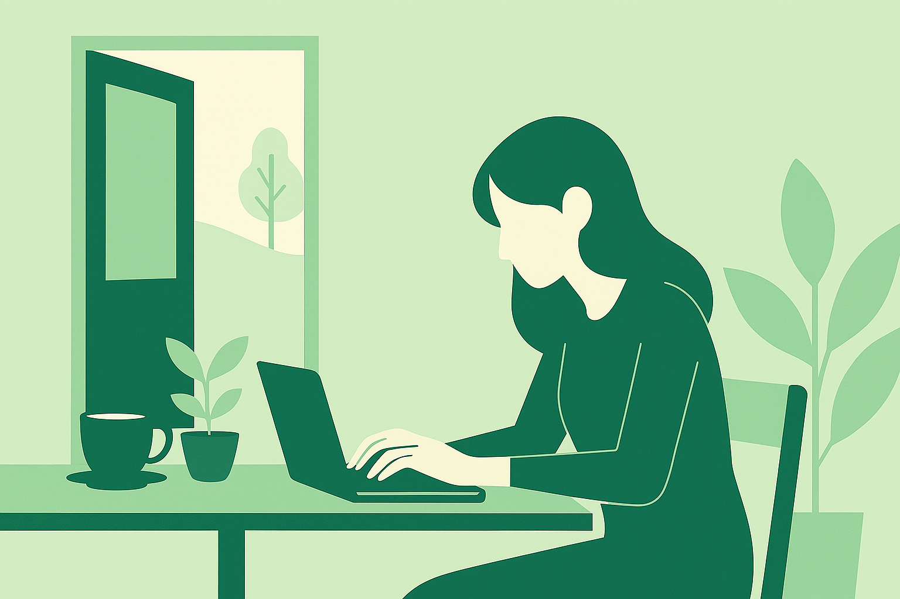
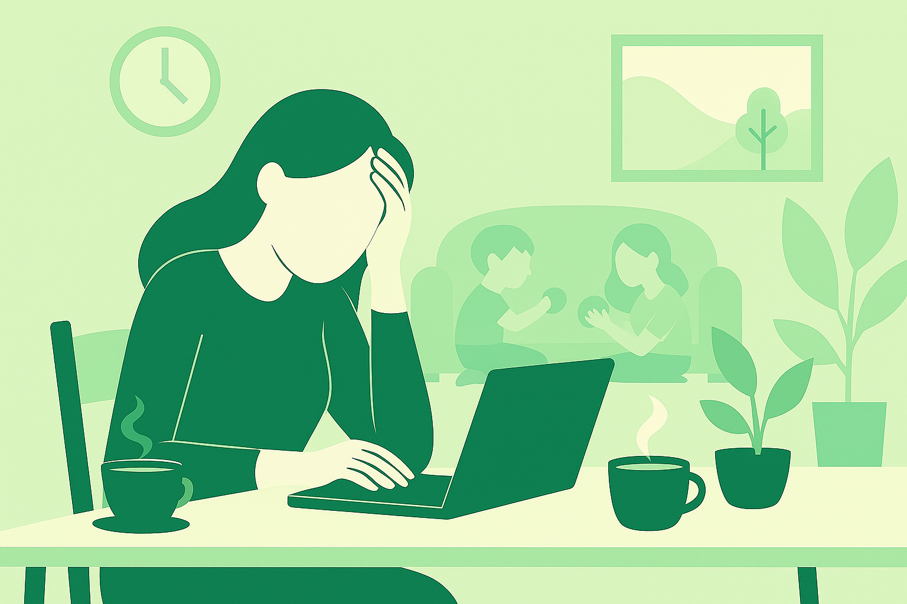

Waarom zou je kiezen voor een werkplek buiten de deur,
in plaats van thuis of op kantoor?
Flexplekken zoals cafés en bibliotheken bieden niet alleen een fijne sfeer,
maar dragen ook bij aan je productiviteit, creativiteit en welzijn.
Hieronder lees je de belangrijkste voordelen.

Nieuwe energie en inspiratie
Een verandering van omgeving kan wonderen doen voor je concentratie.
Waar je thuis makkelijk afgeleid raakt, zorgt een café of bibliotheek juist voor concentratie
en een neutrale werksfeer. De aanwezigheid van andere mensen kan motivatie geven
en kan je helpen langer gefocust te blijven.

Gezonde balans tussen werk en thuis
Werken buitenshuis helpt om werk en privé beter gescheiden te houden.
Wanneer je je laptop dichtklapt en de werkplek uitloopt,
heb je echt het gevoel dat je werkdag voorbij is.
Bovendien combineren veel mensen hun werk in een café of bibliotheek met een korte wandeling
of een koffiepauze, wat goed is voor lichaam en geest.
Toegang tot faciliteiten
Veel locaties bieden meer dan alleen een stoel en tafel.
Denk aan gratis wifi, stopcontacten, lekkere koffie en soms zelfs vergaderruimtes.
Bibliotheken helpen ook door boeken te lenen die je kan gebruiken voor naslagwerk.
Hierdoor hoef je zelf weinig te regelen en kun je direct aan de slag.
Daarnaast zijn er vaak medewerkers of andere flexwerkers om je heen die je graag helpen met problemen
of vragen.